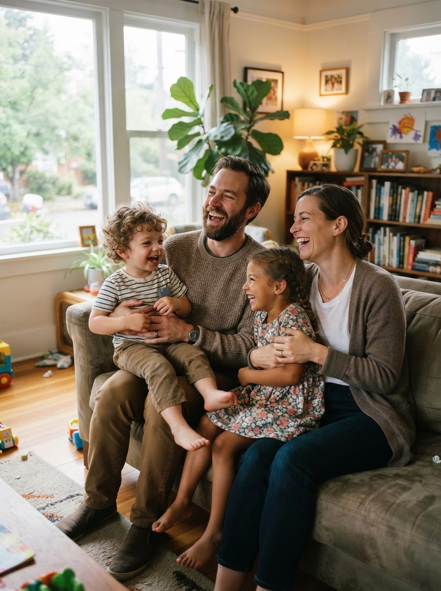

The GPs who make up this network.
Read what each doctor says about their own work, and book with whoever fits. Booking opens the practice's own page.


Most services give you one option and call it access. You can do this online. You can do it in person. It is the same assessment, the same clinicians, the same standard. And it is genuinely your call.
What happens, in order.
Four steps. No queue to clear first.
-
Choose a format.
In person or online, whichever you prefer.
-
Two to three consults.
How many depends on how much history the clinician already has. There is no blood test and no scan. The assessment is your history, taken properly.
-
A medication trial, where appropriate.
Whether it is appropriate is a decision for you and your clinician.
-
Reviews every three months.
Ongoing, on a schedule.
What can be prescribed and reviewed varies by state. Under 18, we refer you on to an appropriate specialist.
Allied care, around your clinician.
Where the assessment points to it, the right kind of support is brought in. Your clinician still holds the plan.
Psychologist
The emotional part
Emotional regulation, anxiety and low mood alongside ADHD, perfectionism, and structured psychological work on patterns that keep repeating.
Dietitian
Eating that keeps going
Regular eating when hunger arrives late, appetite on medication days, and food that works without cooking or planning.
Occupational therapist
The doing part
Practical executive-function systems in real settings, starting work, organising a household, workplace and study adjustments.
Counsellor
Talking it through
Talking things through: relationships, conflict, a change in life stage, the load of a late recognition.
ADHD coach
Accountability, week by week
Accountability and structure over weeks: goals, first actions, check-ins, and the habits around them.
Exercise physiologist
Movement that sticks
Building movement into a week in a way that sticks, and using it deliberately for attention, sleep and mood.
Sleep clinician
Nights that will not start
A body clock that runs late, nights that will not start, and the checks for sleep conditions that can sit beside ADHD.
Relationship counsellor
Two people in the room
Two people in the room: the household load, the sting of reminders, and what ADHD does to a partnership when only one of you has it.
Before your first consult, find:
- Photo ID
- Your Medicare card
- A list of anything you currently take
- Your GP's details
- An old school report, if you can
Questions
Do I need a referral?
No. In Australia you can book a GP directly for an ADHD assessment. If a psychiatrist is needed later, your clinician says so, and says why.
Online or in person?
Either. Same assessment, same clinicians, same standard. You choose.
How many consults?
Two or three. How many depends on how much history the clinician already has. There is no test you can fail, and nothing you need to prepare an argument for.
What does it cost?
Each GP's practice sets its own fees, shown on their booking page before you confirm. ADHDme charges nothing to book.
Who is it for?
Adults, 18 and over. Under 18, we refer you on to an appropriate specialist.